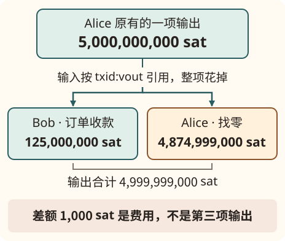

本页目录
先修 M01 与第 05 课的确认数。沿用上一课的本地 regtest，但这次不盯链尖，改做一张能回到前序交易的付款凭证。金额全程用整数聪（sat）：1 BTC = 100000000 sat。Alice、Bob 是两个钱包，不是两个节点验证者；miner 是第三个专收后续奖励的钱包，不参加买卖。没有真实资金。
一笔钱进来，几笔钱出去？
假设你在 Java 里建账：不要先给 Alice 写一行 UPDATE balance。先用一行列出她将花掉的旧输出，再给这次交易的每项新输出各开一行。原来的 50 BTC 整项消耗：不是只剪下 1.25 BTC，其余继续留在原行。


这个账页只解开了第一问：Bob 拿足货款，Alice 的减少额还包括矿工可领取的费用。下面用真实的 RPC 回答更难的三问：输入金额不是自己编的吗？哪一项真属于 Bob？两个钱包是不是在说同一个区块里的同一笔付款？
准备环境：四课共用的 Core 工具
使用 macOS、Linux 或 WSL2 的 Bash、Python 3.11（仅标准库）和带钱包支持的 Bitcoin Core 30.5。本节命令都从仓库根目录开始。labs/ 中必须同时有安全入口 bitcoin.sh、付款逻辑 bitcoin_payment.py、临时节点与单位换算 regtest.py；只有网页时，在一个空目录下建 labs/ 并把三份原文件放进去，该空目录就是这里的根目录。不能只下载 .sh。
已有对应版本且 bitcoind、bitcoin-cli 都在 PATH？直接运行下面三行。入口不接受地址、端口或钱包参数；想保存本次凭证，可用 bash labs/bitcoin.sh > payment.txt。
bitcoind --version
bitcoin-cli --version
bash labs/bitcoin.sh
没有安装 Core？ 在同一个 Bash 终端从根目录执行下面整段；需要 curl、tar、awk 以及 shasum 或 sha256sum。归档与校验清单取自官方同一发行目录，程序解到新建的临时工具目录，不全局安装。最后的 export 在当前终端生效，后面四课都能找到工具。摘要一致只能排除与清单不符的归档，不能独立证明清单的发布者；需要验证来源时，请在解包前按官方签名验证指南用已核对指纹的发布者公钥验证同一版本的清单签名。
btc_course_tools=$(mktemp -d)
(
set -eu
cd "${btc_course_tools:?未能建立工具目录}"
case "$(uname -s)/$(uname -m)" in
Darwin/arm64) target=arm64-apple-darwin ;;
Darwin/x86_64) target=x86_64-apple-darwin ;;
Linux/x86_64) target=x86_64-linux-gnu ;;
Linux/aarch64) target=aarch64-linux-gnu ;;
*) echo '此架构请在官方发行目录选择兼容的程序包。' >&2; exit 1 ;;
esac
base=https://bitcoincore.org/bin/bitcoin-core-30.5
pkg=bitcoin-30.5-$target.tar.gz
curl --fail --show-error --location -o "$pkg" "$base/$pkg"
curl --fail --show-error --location -o SHA256SUMS "$base/SHA256SUMS"
awk -v name="$pkg" '$2 == name {print}' SHA256SUMS > selected.sum
test -s selected.sum
if command -v sha256sum >/dev/null; then
sha256sum -c selected.sum
else
shasum -a 256 -c selected.sum
fi
tar -xzf "$pkg" bitcoin-30.5/bin/bitcoind bitcoin-30.5/bin/bitcoin-cli
)
if [ "$?" -eq 0 ]; then
export PATH="$btc_course_tools/bitcoin-30.5/bin:$PATH"
else
echo '工具未安装成功；请先处理上面的下载、校验或解包错误。' >&2
fi
然后仍在根目录运行 bash labs/bitcoin.sh。btc_course_tools 只装工具，不是钱包数据目录。关闭终端会丢失这次 PATH 设置；用完本卷，可删除这个新建的临时工具目录。不需要 JDK、交易所账户、API Key 或水龙头；只有下载工具需要联网。
程序在新的临时数据目录里创建三个空钱包：alice 付款、bob 收款、miner 接收后续出块奖励。RPC 只走 127.0.0.1 的临时端口，使用目录内的认证 cookie。先看 NODE：程序会检查 chain=regtest height=0 networkactive=False peers=0，不符就不创建钱包；另用 version=300500 核对本课工具版本。程序不读取日常钱包，不打印私钥、助记词或认证信息，结束时会关闭子节点并清除临时目录。不要另开一个不带这些隔离参数的 bitcoin-cli 来补做某一步。
从一笔区块奖励找到能花的钱
账户系统常有一行 account.balance。比特币节点验证的却是 UTXO（未花费的交易输出）：过去某笔交易中的一项输出，有金额和“谁能花”的锁定条件。它的主键是 (txid, vout)，即交易号和从 0 起算的输出序号。一个钱包可以控制许多输出；钱包余额是按归属、成熟度、确认状态等规则算出来的视图，而不是链上可直接扣减的字段。
在新链上没有存款。脚本用 generatetoaddress 先生成一个区块，指定把奖励给 Alice。区块里的第一笔特殊交易叫 coinbase，不从某个老用户扣款。后续奖励全部发给 miner，这样 Alice 和 Bob 的对账单不会混入额外收入。
从上一课的成熟度记录接过这张付款单。高度 100 时，Alice 的钱包还能看到 5000000000 sat 未成熟收入，却选不到输入；高度 101 时，看 MATURITY 的 trusted_sat=5000000000 selectable=1。这是本次付款能选中旧输出的起点，不是给 Bob 放货的门槛。
找 UTXO 行。listunspent 是钱包的选币候选；gettxout(txid, vout) 是节点的当前未花费输出查询。脚本让两者的金额、旧主键对上，并检查 coinbase=True 和原收款地址确实是 Alice 的。记录自己的奖励 txid:vout 和 input_sat，别抄作稍后的付款交易号。付款一旦确认，旧输出就不能再从当前 UTXO 集查到了。
从签名后的输入，倒查它到底值多少
这笔交易恰好只有一个输入。createrawtransaction 用旧主键作 vin；Bob 的货款和 Alice 的找零写进新的 vout。它不签名、不广播，也不会自动补找零。不设找零又保持 Bob 的输出不变，巨大差额就成了所构造交易的费用，而不是钱包里没动的钱（节点或钱包的高费用保护可能会拦住提交）。
现在看交易，先盖住 Alice 的余额。输入 vin 给你的是索引，不是金额；用签名后实际解码的 vin.txid 找前一笔交易，再用 vin.vout 选它的特定输出：
vin, = tx['vin'] # 这里已用 decoderawtransaction 解码真正的签名结果
parent = rpc('getrawtransaction', vin['txid'], 1, reward_block)
prev = parent['vout'][vin['vout']]
prev_sat = sat(prev['value'])
1 是详细程度；reward_block 是第一次出块时记录的区块哈希，所以无需 txindex，也不需要上网找浏览器。PREVOUT 给出这个块哈希、前序交易号、输出序号、前序金额和脚本；和先前 UTXO、稍后 SIGNED 的引用逐项连起来。旧 UTXO 被花掉不会抹掉包含它的历史交易。换成多输入，必须对每个 vin 重做这次连接，再对金额求和；不能拿其中某个钱包的余额代替。
旧输出的条件是原生 P2WPKH（第 07 课展开脚本）。signrawtransactionwithwallet 让 Alice 在钱包里签名；解码后的 scriptSig 是空的，txinwitness 才有两项：签名（含签名哈希类型字节）和公钥。SIGNED 记录它们的字节数，脚本还把第二项与 Alice 原收款地址的公钥相对。节点会检查公钥哈希是否匹配旧输出，再用公钥校验签名。两个栈项不是“两份签名”，一串公开的 txid:vout 也不是花费授权。此时 complete=True，Bob 还没有任何确认。
谁拿了找零？费率又是多少？
本实验先由 Bob 自己生成订单地址，再由 Alice 调 getrawchangeaddress 取内部找零地址。getaddressinfo 给出各自地址对应的输出脚本，Alice 的钱包还告诉你 ischange=True。拿 OWNERSHIP 两个脚本与两条 OUTPUT.script_hex 逐字节匹配，不按位置、重复出现的地址或金额大小猜。陌生人若只有原始交易，看不到 Alice 钱包里的“内部找零”标记。拿到实测的 n 后，Bob 的收款凭证应指向付款 txid:n，不是旧奖励的主键。
| 从终端抄取 | 对账含义 | 预期值 / sat |
|---|---|---|
PREVOUT.value_sat（同时核对 UTXO.input_sat） |
旧输出的全部金额 | 5000000000 |
OUTPUT 中匹配 bob_receive 的 value_sat |
Bob 收款 | 125000000 |
OUTPUT 中匹配 alice_change 的 value_sat |
Alice 找零 | 4874999000 |
| 输入和减输出和 | 留给打包矿工的手续费 | 1000 |
脚本在构造时指定 1000 sat 的绝对费用。btc() 只在 RPC 边界把整数 sat 写成 BTC 十进制字符串；读回用 sat() 精确还原，不经 double。解码后再从前序金额减去所有输出，得 5000000000 − (125000000 + 4874999000) = 1000 sat；这个算式不依赖钱包声称的费率。testmempoolaccept 对同一份签名交易按本节点当前规则做预检，再独立读出 fees.base 与复算值相对。allowed=True 表示它此刻可被本机接纳，不等于已经广播。
绝对费用不等于单价。 看 PREFLIGHT.vsize（虚拟字节，vB；含见证时不等于裸交易文件长度），再算 fee_sat / vsize。例如如果是 141 vB，1000 / 141 ≈ 7.092 sat/vB。这是算例，实测按自己那次的 vsize；rate_sat_vb 仅在显示时保留三位小数。不要把单价乘回去的舍入数当作原始 sat，更不要把这个实验费率当作主网报价。
跟同一笔付款，看两个钱包的回执
- 本机受理：
sendrawtransaction将已签名交易交给本节点，返回付款txid，与旧奖励的txid不同。getmempoolentry能按这个新 ID 查到交易。此时MEMPOOL中 Bob 的confirmations=0、bob_pending_sat=125000000。内存池是本节点尚未入块的候选集合，不是账本的另一个名字。 - 进入区块：再挖第 102 块，奖励仍给
miner。getblock从该块的交易列表找到付款（BLOCK.includes_tx=True）；不含内存池地用gettxout回查旧主键，已是空值（old_utxo_spent=True）。要把这笔支出与收入配成一对，分别在wallet='alice'和wallet='bob'调gettransaction(付款 txid)。比较两条RECEIPT：txid相同，两边的blockhash都等于BLOCK.hash，双方confirmations都是 1；脚本还要求两个钱包的lastprocessedblock.hash都等于此次观察的链尖。只比相同的高度不够，两条分支可能同高不同块。 - 核算到账：Alice 回执的
amount_sat=-125000000是货款，fee_sat=-1000是另外支付的费用；Bob 的category=receive明细中，vout、address、amount_sat应与解码出的 Bob 输出一致。再抄BALANCES四个数，分别算Bob 后 − Bob 前、Alice 前 − Alice 后。两个钱包没有其他买卖收入，后续奖励也进了独立钱包，所以这次余额差可以用来交叉检查；有并发转账的生产钱包不能用“余额刚好变了”给特定订单归因。
第 103 块仍给 miner，不再次付款。脚本用原付款 txid 重查两个钱包。交易的包含块仍是第 102 块，观察链尖才是 103，控制台应有 DEPTH height=103 confirmations=2。节点退出并删掉临时钱包后，账对平会给出：
PASS bob_credit_sat=125000000 alice_debit_sat=125001000 difference_sat=1000
PASS 证明本实验交易账对平，不是对任意订单发货的口令。每次地址、交易号、区块哈希可能变化；比较引用关系和金额不变量，不比截图中的随机字符串。提交交接时至少保留网络、前序主键、收款输出主键、脚本、金额、包含块哈希、观察高度与两端确认数。记账可按 (网络, txid, vout) 标识收款输出，避免重复轮询反复计入；确认数会随链重组回退，不是永久状态。
不改交易，只改订单，会改哪一行？
现在固定证据：收款脚本是 Bob 在付款前给出的脚本，Bob 的收款明细是 125000000 sat。账务方另存了 ORDER_DUE_SAT，不能从到账金额倒填“应收”。本工单要求金额恰好匹配、至少 2 个确认。付款实验把同一证据套入原约定和一个反事实约定，不是拿这笔钱核销两个订单。默认输入应得到：
| 观察时点 | 应收 / sat | 实收 / sat | 实收减应收 / sat | ORDER.decision |
|---|---|---|---|---|
| 102，原订单 | 125000000 | 125000000 | 0 | WAIT_DEPTH：只有 1 个确认 |
| 103，原订单 | 125000000 | 125000000 | 0 | MATCH |
| 103，假设订单原先就多要 1 sat | 125000001 | 125000000 | −1 | HOLD_SHORT：少付，不放行 |
最后两行对应同一份链上凭证；没有重签、没有多挖、手续费也没变。多付则返回 HOLD_OVER，交人工按约定处理；“金额不符”不等于节点拒绝交易。这里已经先核对网络和收款脚本；仅比较金额和深度，无法识别钱付给了别人。
故障定位：先找最后一条证据
| 现象 | 先查什么 | 怎么处理 |
|---|---|---|
缺少 bitcoind / bitcoin-cli，或启动时有架构错误 |
用 command -v 查看两个程序，uname -sm 查看系统架构 |
在 Bash 中用本页对应架构的官方归档；不要用只有图形应用的包代替两个命令。WSL2 使用 Linux 包。 |
归档校验不通过或 selected.sum 为空 |
文件名、版本、清单是否属于同一官方发行目录 | 丢弃该次下载，重新从官方目录取得归档与清单；不要跳过校验继续解压。 |
RPC 启动超时，或 NODE 不满足前提 |
查节点启动时的首条错误、回环端口和系统临时目录权限 | 确保允许本机回环监听、临时目录可写；重新运行让脚本分配新端口，不要改连既有节点。 |
| 看到奖励但没有可选输入 | 看 MATURITY 的链高、immature_sat、selectable |
第 100 块仍为 0 是预期；等脚本生成第 101 块。不要导入有钱的真实钱包。 |
| 预检拒绝交易或金额对不上 | 看 SIGNED 的旧主键及 OUTPUT 两个地址，再按 sat 复算 |
恢复脚本原值；不要用浮点数或把 sat 直接作为 RPC 的 BTC 金额。 |
confirmations=0，看到了交易却没有确认入账 |
区分最后一行是 MEMPOOL、BLOCK 还是 DEPTH |
不要据 txid 判定成功；让脚本完成两次观察和订单比对。中断可从零重跑。 |
PASS 出现，却有 HOLD_SHORT |
比较 ORDER.case、due_sat 与 Bob 明细 amount_sat |
若是 counterfactual，这是有意的少付边界，不要让矿工再确认一次来“补钱”。 |
独立作业：少付一聪，账是不是仍然平？
先交原单。 从仓库根目录执行 bash labs/bitcoin.sh > payment.txt。遮住 PREFLIGHT、ORDER 和 PASS，从 PREVOUT、两行 OUTPUT 和 BALANCES 各算一次手续费；从两行 RECEIPT 和 BLOCK 写出“哪一块里，谁实际收了哪个输出”。若不能指出奖励主键与收款主键的区别，不能用 txid 截图代替。
答案：旧输入减输出为 5000000000 − 125000000 − 4874999000 = 1000 sat。从钱包侧再算一次：Alice 支出 125001000 减 Bob 净增 125000000，同样为 1000 sat。两端余额只在没有其他奖励和转账干扰时能这样直接对账，这正是让后续奖励都进 miner 的原因。
再交异常单。 这次不提高应收，模拟付款方少付：把三份源码拷到一个新目录（仍保留 labs/），只把副本 bitcoin_payment.py 中的 PAY_SAT = 125_000_000 改成 124_999_999，不动独立的 ORDER_DUE_SAT、手续费和确认门槛。下面是根目录下的准备和运行命令，两段之间用编辑器完成上述一处修改：
work=$(mktemp -d)
mkdir "$work/labs"
cp labs/bitcoin.sh labs/bitcoin_payment.py labs/regtest.py "$work/labs/"
bash "$work/labs/bitcoin.sh" > "$work/short.txt"
验收判据：从 short.txt 提交 Bob 的实际 txid:vout、前序主键、两项输出、包含块哈希，以及 103 高度的原订单差异。Bob 应收 125000000，实得 124999999；找零 4874999001，Alice 净减 125000999，费依旧 1000 sat。双方都认可同一付款且确认数达到 2，case=agreed 却仍 delta_sat=-1 decision=HOLD_SHORT。若程序靠等第三个确认或把费用补进货款才让账“平”，判定不合格。交两份文本日志即可，不交钱包、密钥或 RPC 凭据。
换一个方向自查：如果在副本里改为付 200000000 sat，原订单仍不动，找零应为 4799999000，Alice 净减 200001000；测得 HOLD_OVER 才与“精确匹配”的规则相符。新的实验钱包和交易不应要求复现旧 txid。
官方资料
- Bitcoin Core 30.5 官方发行归档与校验清单；官方安装及签名验证说明。
- Bitcoin 开发者指南：交易与未花费输出；开发者示例：regtest 与 101 个区块。
- Core RPC：listunspent、gettxout、getbalances：分别查钱包候选、节点 UTXO 集及钱包余额分类。
- Core RPC：getrawtransaction：用明确的块哈希取出前序交易；getaddressinfo：区分地址可推导的脚本和钱包专有的归属信息。
- Core RPC：signrawtransactionwithwallet、testmempoolaccept、gettransaction：核对签名完整性、节点预检和钱包收款记录。
- BIP 141：P2WPKH 见证与虚拟大小：两项见证的条件、weight 与 vsize 的定义。上述 RPC 在线手册导出自 30.0 系列；本课二进制固定为 30.5，以对应版本命令帮助为准。